Fun with filters
Part 1 is about the humble convolution: building it by hand, using it to find edges with finite differences, and then taming the noise by folding a Gaussian into the derivative filter.
Convolutions from scratch
I implemented 2D convolution directly with NumPy. The image is first zero-/edge-padded so that a "same"-size output comes back — a k×k filter pads by k//2 on every side. The naïve version is four nested loops (rows, columns, and the two kernel axes); collapsing the two inner kernel loops into a single vectorized np.sum(window * kernel) gives the two-loop version, which is what I use below. Both agree with scipy.signal.convolve2d to floating-point precision.
Runtime & boundaries. The four-loop version is painfully slow (an inner Python loop per kernel entry); the two-loop version is dramatically faster because the per-pixel dot product runs in C inside NumPy. scipy is faster still. For boundaries I pad with edge replication rather than zeros, which avoids a dark halo around the border that pure zero-padding would introduce.
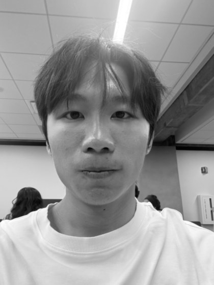
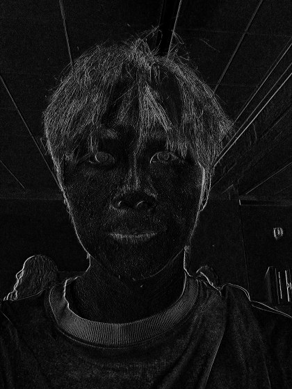
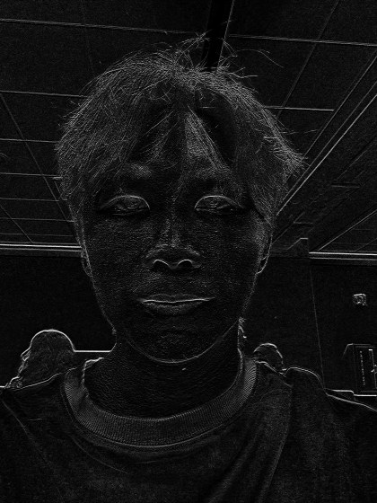
Finite difference operator
Edges are where intensity changes fast — where the derivative is large. I convolve the cameraman with a central-difference operator in each direction, Dx = [1, 0, −1] and its transpose Dy (scaled for contrast), then combine them into the gradient magnitude:
Finally I binarize the magnitude with a threshold to get a clean edge map. I chose a threshold of 100 by sweeping values: too low and the film-grain noise in the flat sky and grass survives as speckle; too high and the faint edges of the buildings and tripod legs drop out. 100 is the point where the true structure stays connected while most of the noise disappears.
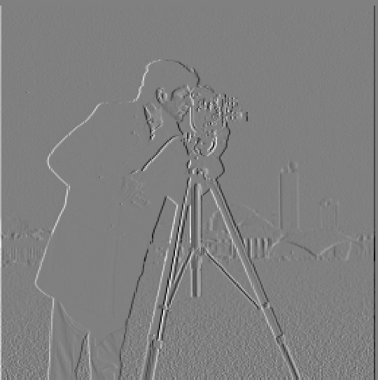
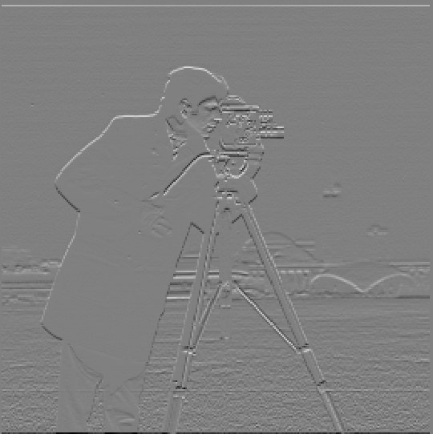
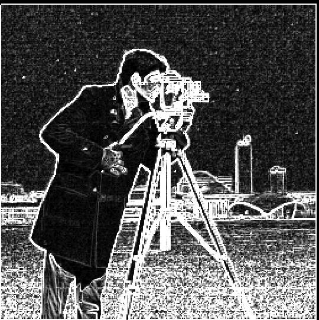
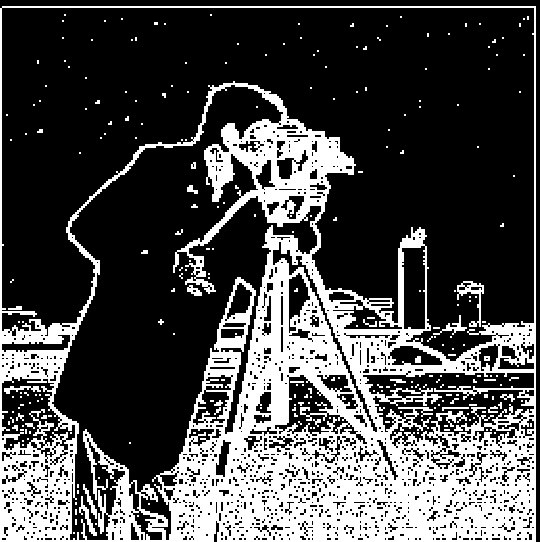
Derivative of Gaussian (DoG) filter
The raw finite-difference edge map is noisy because differentiation amplifies high-frequency noise. The fix is to blur first with a Gaussian (a low-pass filter), then differentiate. Because convolution is associative, blurring-then-differentiating is identical to convolving once with a pre-computed Derivative-of-Gaussian kernel:
I built the DoG kernels as the full convolution of a Gaussian (σ = 1) with Dx and Dy. Applying them in one pass gives a gradient magnitude that is identical to the two-pass version to machine precision (mean interior difference ≈ 10−14) — a nice sanity check on the associativity claim.
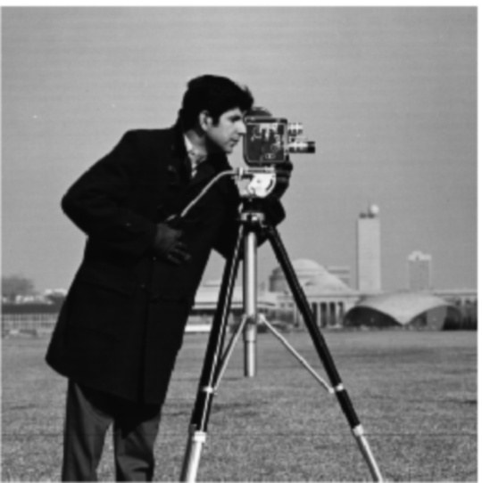
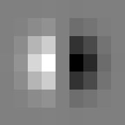
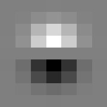
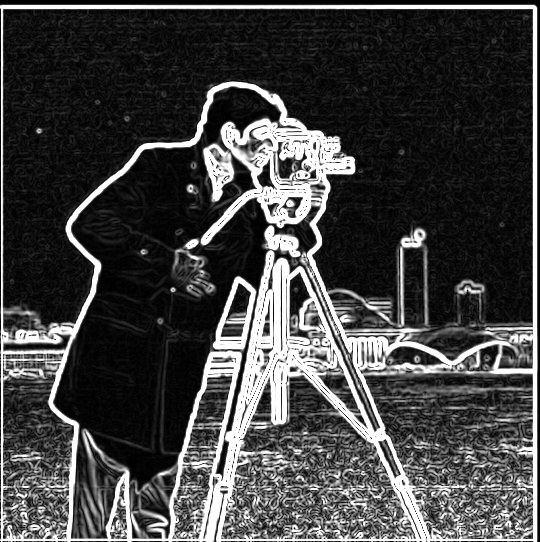
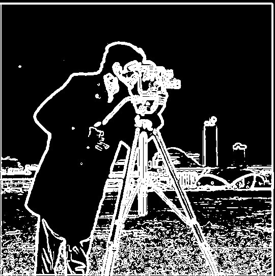

What differs from Part 1.2
The DoG edges are cleaner and more continuous: the speckle in the sky and grass is gone, and the true contours are thicker and better connected. The cost is a little localization precision — smoothing slightly fattens and rounds sharp corners. Blurring before differentiating trades a hair of edge sharpness for a large reduction in noise.
Fun with frequencies
Part 2 treats an image as a stack of frequency bands. Once you can separate low from high, you can boost detail (sharpening), swap detail between two pictures (hybrid images), and stitch two pictures together band-by-band (multiresolution blending).
Image sharpening — the unsharp mask
Blurring an image with a Gaussian keeps only its low frequencies. Subtracting the blur from the original leaves the high frequencies — the edges and fine detail. An image looks sharper when its high frequencies are stronger, so we simply add a scaled copy of that detail back:
The right-hand form folds the whole operation into a single convolution kernel — the unsharp mask filter — where e is the identity (unit-impulse) kernel. Below, α = 2.
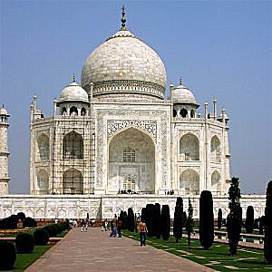
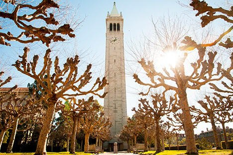
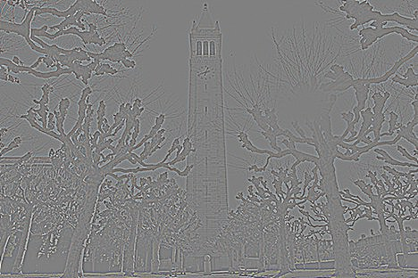
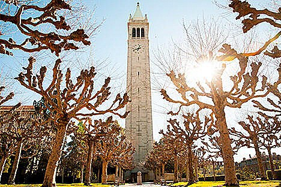
Blurring a sharp image, then re-sharpening it
As an experiment I took the already-sharp Campanile, blurred it (σ = 2), then ran the unsharp mask on the result. Sharpening makes the edges look crisper, but it cannot recover the original: the Gaussian permanently threw away the high frequencies, and the unsharp mask can only re-amplify what survived — it can't reinvent lost detail. You also see faint halos around high-contrast edges at α = 3. The lesson: sharpening is not the inverse of blurring.
Hybrid images
A hybrid image blends the low frequencies of one picture with the high frequencies of another. Up close your eye reads the sharp high-frequency image; from far away (or squinting) only the smooth low-frequency image survives, so the interpretation flips with viewing distance. I low-pass one image with a Gaussian and high-pass the other (original minus its Gaussian blur), then add them. The cutoff for each image is the Gaussian σ, tuned by hand per pair.
Full analysis — bear (far) + tiger (near)
Low-pass σ and high-pass cutoff both set to σ = 6. I picked this by experiment: a smaller σ left too much of the bear's sharp fur competing with the tiger up close, while a larger σ washed the bear out at a distance. σ = 6 is where the tiger dominates near and the bear dominates far.
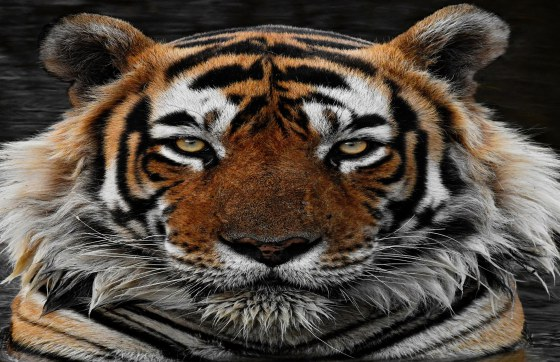
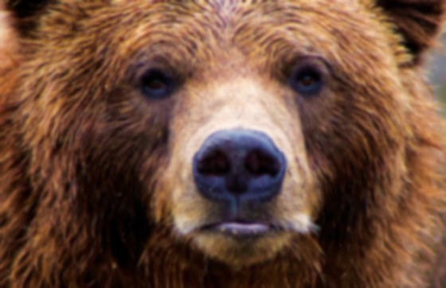
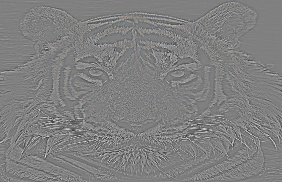
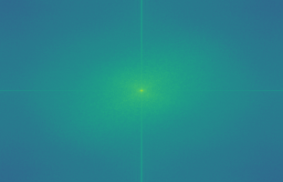
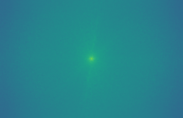
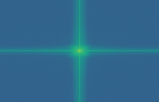
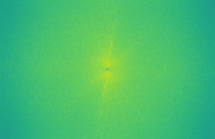
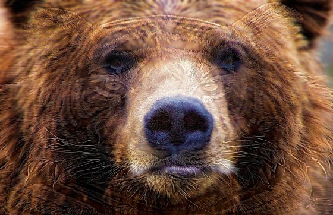
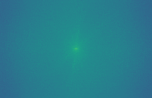
The Fourier transforms make the mechanism visible: the low-pass spectrum concentrates all its energy in a bright blob at the center (low frequencies), while the high-pass spectrum has a dark hole at the center with energy pushed out to the edges (high frequencies). The hybrid's spectrum is simply their sum.
Two more hybrids
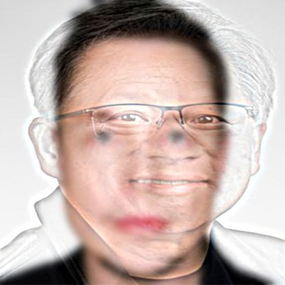
Gaussian and Laplacian stacks
A stack is like a pyramid but without downsampling — every level stays full resolution. The Gaussian stack applies progressively stronger blur (I double σ each level, starting at σ = 2, over 5 levels). The Laplacian stack is the difference between consecutive Gaussian levels — each level isolates one frequency band — with the final blurred level kept as the low-pass residual. By construction the Laplacian levels sum exactly back to the original image (verified to ~10−14), which is what makes band-by-band blending possible in 2.4.
The Laplacian levels are signed, so they are shown offset by +128 (mid-gray = zero).
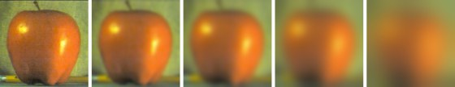
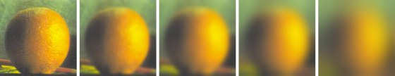
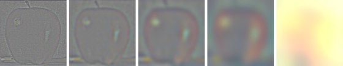
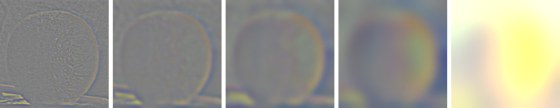
Recreating Figure 3.42 — the "oraple"
Blending each Laplacian band with a Gaussian-blurred vertical mask (blurred at the matching level so coarse bands blend over a wide seam and fine bands over a narrow one), then summing, reproduces Szeliski's Figure 3.42. The grid below shows the apple's masked band, the orange's masked band, and their sum at each level — the last row is the smooth low-pass residual.
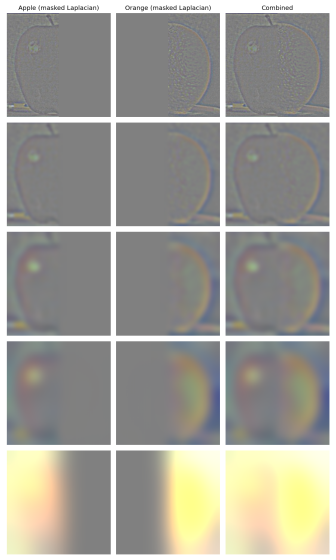
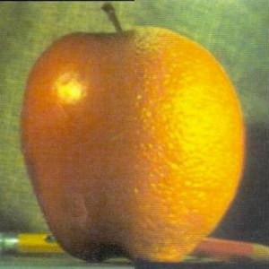
Multiresolution blending
The oraple recipe generalizes to any pair of images and any mask. For each Laplacian level I blend mask·L1 + (1−mask)·L2, where the mask itself is Gaussian-blurred at that level, then sum the blended stack. Wide, soft transitions on the coarse bands and tight ones on the fine bands are exactly what erase the seam.
Vertical seam — Berkeley + Stanford seals
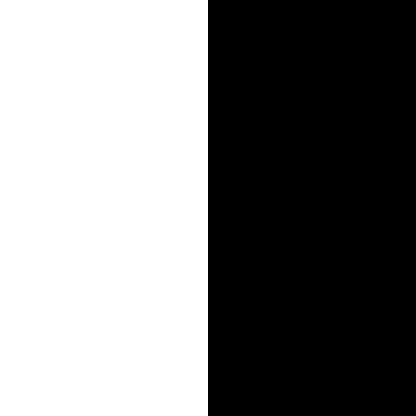
Irregular mask — Jensen's face into Elon's head
My favorite result. Jensen's face is affine-warped so his eyes and mouth land on Elon's, then a circular mask drops his face onto Elon's head. Elon's dark hair, goatee, and skin frame Jensen's smiling, bespectacled face — with no hard boundary.

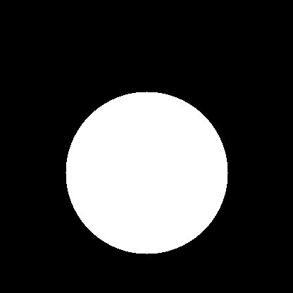
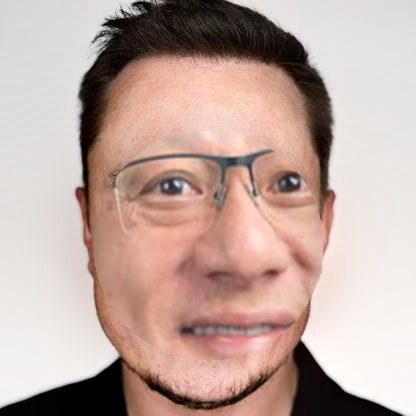
What I took away
The single idea that tied the whole project together is that convolution is linear and associative, and that a chain of linear image operations can always be folded into one filter. It shows up everywhere here: the derivative-of-Gaussian is just G∗D pre-combined; the unsharp mask is (1+α)e − αG in a single kernel; and multiresolution blending is nothing but doing the blend independently in each frequency band and adding the bands back up.
The most valuable practical lesson was subtler: keep signed data in floating point. Derivatives, high-pass images, and Laplacian levels are all signed, and the moment they touch uint8 the negatives either clip to zero or wrap around — silently destroying half the signal. Once every stage worked in float, the identities I expected on paper (single-pass = two-pass DoG, and Laplacian levels summing back to the original) held to machine precision, and the blends came out seamless.